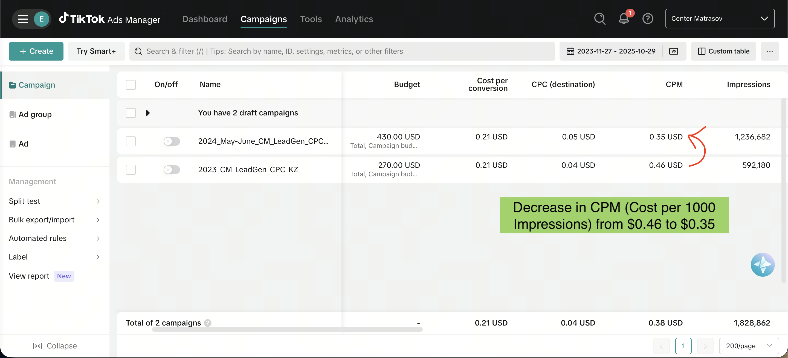
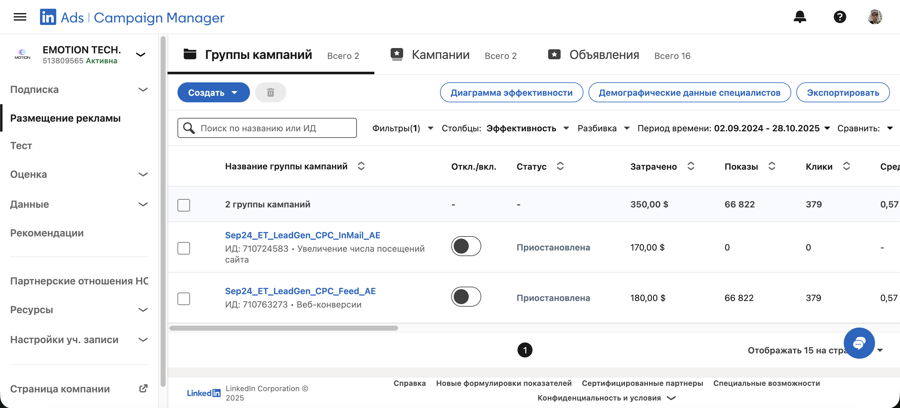
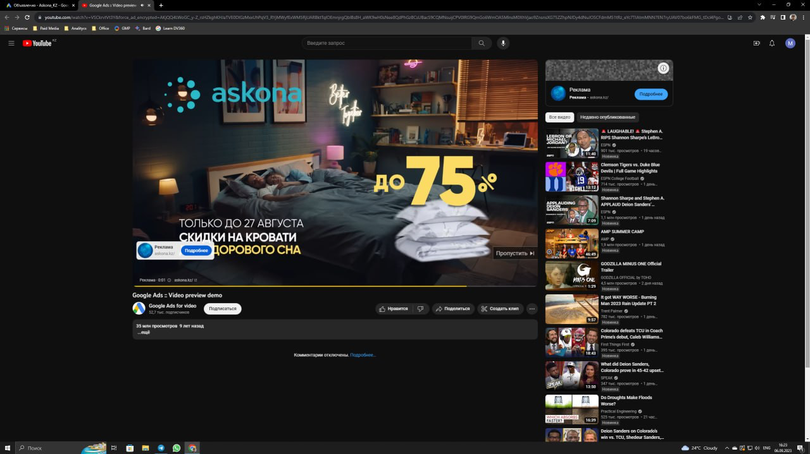
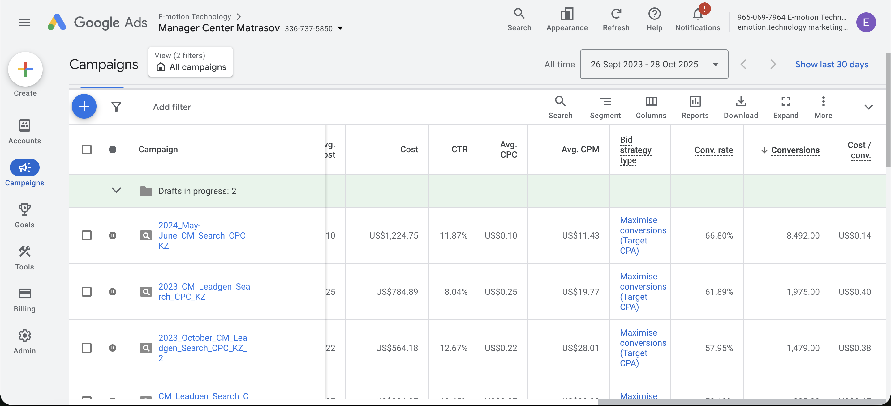

Алматы · Казахстан · Performance + AI Ops
Привожу бизнесу в Казахстане больше заявок и меньше ручной маркетинговой рутины.
Я Авиэль Болатхан. Собираю performance-маркетинг и AI-автоматизацию в одну систему роста: оффер, трафик, аналитика, лиды, CRM-логика и повторяющиеся процессы без лишнего хаоса.
abzal.business.01@gmail.com
English / Русский / Қазақша
$30k+ рекламных бюджетов в месяц
Кейсы по Google Ads, Meta, TikTok, LinkedIn
Опыт с BIC, Leroy Merlin, Askona
Что вы получаете
Не просто настройку рекламы, а понятную коммерческую систему.
Большинство компаний теряют деньги не только в рекламном кабинете. Проседает оффер, ломается трекинг, заявки не обрабатываются вовремя, а команда тонет в ручной операционке. Я собираю это в один рабочий контур.
Больше качественных заявок
Структурирую кампании и офферы так, чтобы трафик работал на продажи, а не на красивые клики.
Ниже CPL и меньше шума
Убираю точки потерь в креативах, аналитике, посадочных и аудиторных связках.
Прозрачность по цифрам
GA4, GTM, события, атрибуция и дашбордный контур без отчетов ради отчетов.
Быстрее маркетинговая команда
Автоматизирую повторяющиеся процессы: outreach, подготовку материалов, доставку, проверки и handoff.
Услуги
Где я даю наибольшую пользу
Performance marketing
Google Ads, Meta Ads, TikTok Ads, LinkedIn Ads для лидогенерации, e-commerce и B2B.
- Аудит действующих кампаний
- Пересборка структуры и оффера
- Снижение CPL и рост качества лидов
Аналитика и воронка
Настраиваю измеримость и понятную логику принятия решений, чтобы маркетинг не спорил с продажами.
- GA4 и GTM
- События, ремаркетинг, UTM
- Аудит посадочных и путей конверсии
AI automation
Собираю практичные AI-сценарии под маркетинг и ops, без декоративного “AI ради AI”.
- Outreach workflows
- Telegram и WhatsApp delivery flows
- Agentic CLI и operator-style процессы
Кейсы
Реальные материалы и рабочие результаты
Ниже не просто набор скринов. Каждый блок показывает тип задачи, канал и конкретный сигнал результата, который важен для бизнеса.
Google Ads
$0.82 → $0.18 CPL
Кейс-материал с заметным снижением стоимости лида между периодами 2023 Oct-Nov и 2024 May-June.
Открыть PDF кейса
Meta Ads
$1.02 → $0.36 CPL
Оптимизация лидогенерации по сохраненному Meta Ads кейс-материалу с сильным снижением CPL.
Открыть PDF кейса
TikTok Ads
Работа с paid social и оптимизацией CPM для быстрых кампаний и retail/D2C задач.
Открыть кейс
LinkedIn Ads
B2B-кампании и multi-channel подход для проектов, где важен качественный профессиональный трафик.
Открыть кейс
Askona / YouTube
Видео и brand-performance задачи внутри крупного клиентского контекста.
Открыть визуал
Retail / D2C
Google Ads и продажи для retail-проектов с фокусом на понятный performance-контур.
Открыть визуалКому это подходит
Лучше всего работаю там, где нужны заявки, измеримость и меньше ручной рутины.
Retail
Home Improvement
Furniture / Mattresses
E-commerce
B2B lead generation
B2C / D2C
Как работаю
Простой процесс, чтобы быстро выйти на результат
Разбор задачи
Понимаю бизнес-цель, текущую рекламу, оффер, воронку и узкие места.
План на 30 дней
Формирую реалистичный список гипотез, приоритетов, запусков и фиксов.
Запуск и оптимизация
Пересобираю кампании, трекинг, креативные сигналы и проблемные участки.
Система и масштаб
Оставляю понятный контур: что приносит деньги, что автоматизируется, что масштабируется.
FAQ
Частые вопросы до старта
Берете только большие бюджеты?
Нет. Важнее не размер бюджета, а наличие понятной задачи и возможности нормально измерять результат.
Работаете только как таргетолог?
Нет. Я закрываю связку трафика, аналитики, оффера, части воронки и прикладной AI-операторки.
Можно начать с аудита?
Да. Это часто самый быстрый способ понять, где именно теряются деньги и время.
AI automation реально нужен?
Нужен там, где команда повторяет одни и те же действия руками. Если рутины много, автоматизация окупается быстро.
Контакт
Если нужен рост заявок, аудит рекламы или AI-автоматизация маркетинга, напишите мне.
Быстрее всего отвечаю в Telegram. Если удобнее email, тоже подходит. Обычно на старте достаточно коротко описать нишу, текущую рекламу и главную проблему.